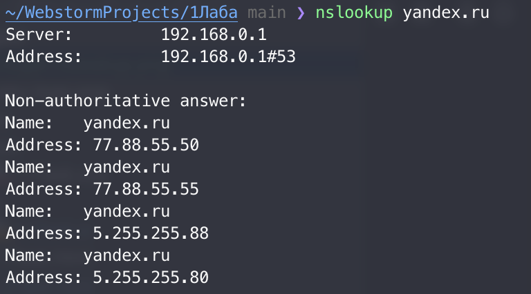
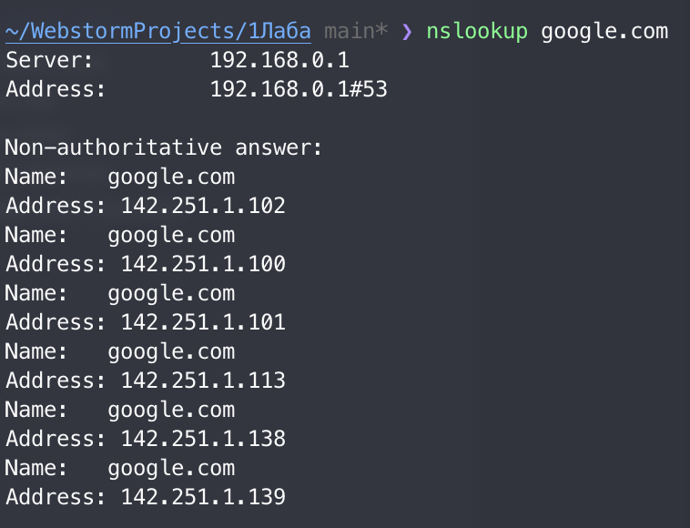
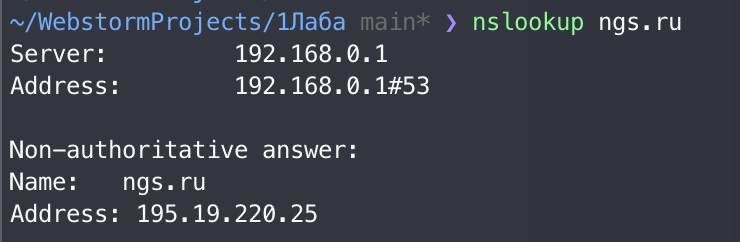

nslookup - утилита, предоставляющая пользователю интерфейс командной строки для обращения к системе DNS
Выполнение команды для домена yandex.ru показно на рис. 1
Выполнение команды для домена google.com показно на рис. 2
Выполнение команды для домена ngs.ru показно на рис. 3


